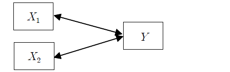
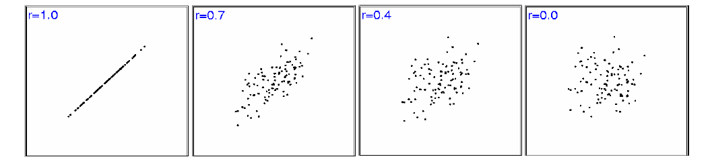
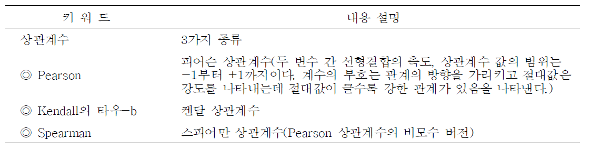
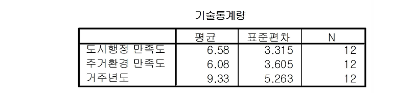
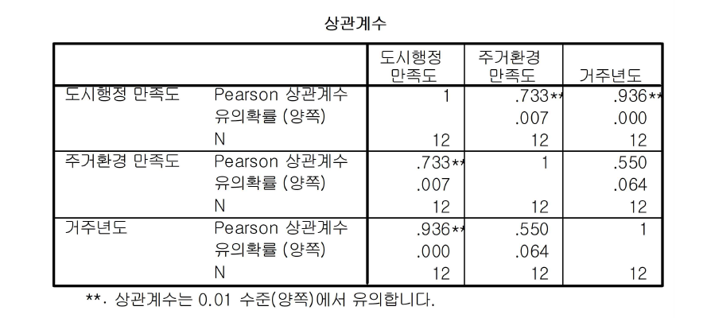
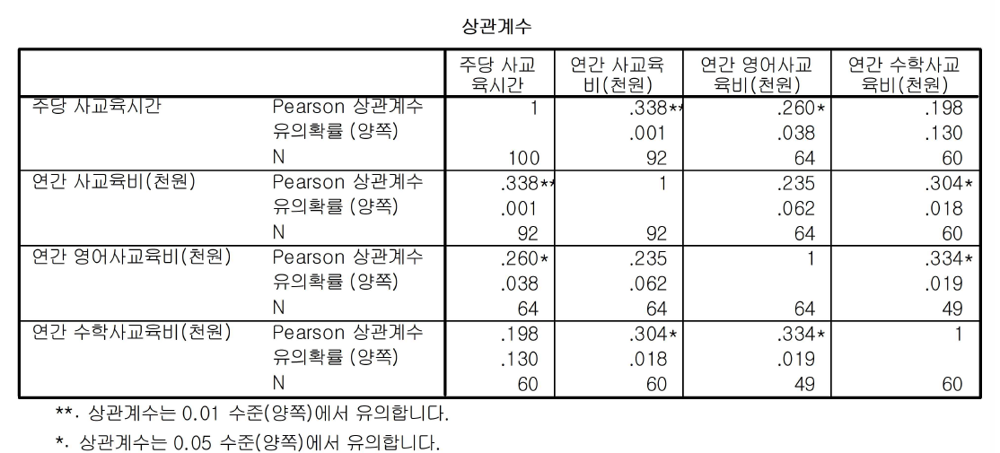
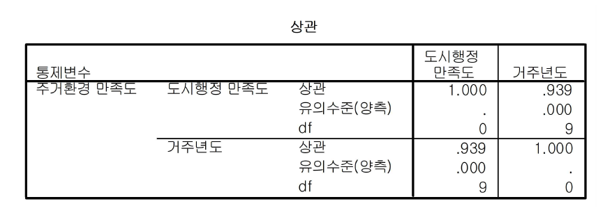
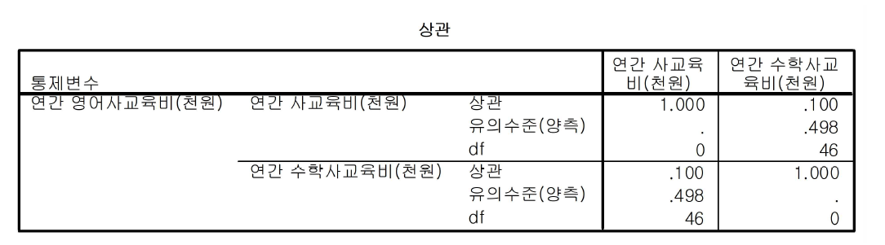

Chapter 9 상관분석
통계분석을 하다보면 모집단 사이의 독립성은 유지할 수 있으나, 모집단을 이루는 구성원의 변수들은 서로 독립적인 경우가 사실 매우 드물다. 변수는 개체를 설명해주는 특성이라 할 수 있는데 이러한 여러 특성들이 개체 안에서 서로 유기적인 관계를 갖고 있기 때문이다.
예를 들어, 광고비의 지출이 많으면 많을수록 매출액은 증가할 것이고, 판매원의 수가 많으면 많을수록 시장점유율은 증가할 것이다. 또한 소비자의 가격에 대한 인지와 품질인지 사이에는 관계가 있을 것이다. 이와 같이 두 변수 간에 어떤 관계가 존재할 때 이러한 관계가 선형(linear) 관계이면 상관관계가 있다고 하며, 그 크기 정도를 상관계수라 한다.
상관계수를 구하는 방식을 모집단과 표본으로 나누어 설명하면 다음과 같다.
① 모집단 상관계수
\[ \rho=\frac{\sigma_{xy}}{\sqrt{\sigma_x^2}\sqrt{\sigma_y^2}}=\frac{\sigma_{xy}}{\sigma_x\sigma_y}, \,\,\, -1\le\rho\le1 \]
② 표본 상관계수
\[ r=\frac{S_{xy}}{\sqrt{S_x^2}\sqrt{S_y^2}}=\frac{S_{xy}}{S_xS_y}, \,\,\, -1\le r\le1 \]
③ 편(부분) 상관계수(표본)
\[ r_{12,3}=\frac{r_{12}-r_{13}r_{23}}{\sqrt{1-r_{12}^2}\sqrt{1-r_{23}^2}} \] 여기서, \(r_{12,3}\)의 의미: \(X_3\)을 통제한 상태에서 \(X_1\)과 \(X_2\)의 부분적인 상관계수를 나타냄
9.1 상관계수의 종류
상관관계의 종류에는 세 가지가 있다.
① 단순상관계수(simple correlation coefficient): 두 변수간의 상관관계
② 다중상관관계(multiple correlation): 하나의 변수와 두 변수 이상의 변수간의 상관관계

③ 편상관관계(partial correlation): 다른 변수들의 상관관계를 통제하고 (다른 변수들과 같이 변화하는 부분을 제외하고) 순수한 두 변수 간의 상관관계

9.2 상관계수의 해석
상관계수는 두 변수사이의 일차적인(선형적인) 관계가 얼마나 강한가를 측정해주는 지수이다. 이것은 두 변수사이의 일차관계(선형)적인 방향과 관련정도를 나타낸다.
- 산포도를 그려봄으로써 두 변수사이의 개략적인 관계를 파악한다.
- 공식을 이용하여 상관계수를 구하고 해석을 내린다.
1.0 ~ 0.7(-1.0 ~ -0.7)의 경우 : 매우 강한 관련성
0.7 ~ 0.4(-0.7 ~ -0.4)의 경우 : 상당한 관련성
0.4 ~ 0.2(-0.4 ~ -0.2)의 경우 : 약간의 관련성
0.2 ~ 0.0(-0.2 ~ -0.0)의 경우 : 관련성이 없음
9.3 상관계수의 가설 검정
두 변수 사이의 선형관계가 통계적으로 유의한지 여부를 검정하여야 한다. 표본상관계수 에 근거하여, 모집단의 상관관계 (rho)에 대한 가설을 검정한다. 이 가설을 검정하기 위해서는 두 변수 모두 정규분포를 따르는 분포로부터 확률표본이 추출되었다는 기본가정이 있어야 한다. 검정절차는 다음과 같다.
*가설 설정
\(H_0\): \(\rho_{xy}=0\), 두 변수 간에 상관관계가 없다.
\(H_1\): \(\rho_{xy}\ne 0\), 두 변수 간에 상관관계가 있다.
9.4 상관분석의 실행
상관관계가 인과관계와는 다르다. 즉, 상관분석은 종속과 독립이라는 인과관계가 아니라, 상호 동등한 위치에서 변수들 상호간 변화의 방향과 정도를 파악하고자 하는 것이다.
예제) 다음과 같은 자료를 살펴보자. 도시행정에 대한 만족도(\(X_1\)), 주거환경에 대한 만족도(\(X_2\)) 등이 거주년도(\(Y\))와 관련이 있다는 가정에 따라, 어느 지방 도시의 주민 12명을 대상으로 조사하여 다음과 같은 결과를 얻었다.

이를 위해 다음과 같이 실행한다.
분석(A)
상관분석(C)
이변량변수(B)변수상자에서 오른쪽 변수상자로 해당 변수를 이동하고, 상관계수에서 Pearson을 선택하고 유의성검정은 양쪽검정을 선택한 결과를 보여주고 있다.

[결과 : 변수별 평균 및 표준편차]

도시행정 만족도, 주거환경 만족도, 거주년도에 대한 평균과 표준편차가 나타나 있다.
[결과 : 상관분석 결과]

도시행정 만족도(\(X_1\))와 주거환경 만족도(\(X_2\))는 매우 강한 정방향의 상관관계(+0.733)를 가지고 있으며, 통계적으로 매우 유의하다(**). 또한 도시행정 만족도와 거주년도는 서로 매우 강한 정방향의 상관관계(+0.936)를 지니고 있으며, 통계적으로 매우 유의하다(**). 그러나 도시행정 만족도가 높아서 주거환경에 만족하는지, 혹은 주거환경에 대한 만족도가 높아서 도시행정의 만족도가 높은 것인지는 알 수 없다(즉, 인과관계는 알 수 없다).
사교육 실태 및 의식조사에서 연간 사교육비와 주당 사교육시간, 연간 영어 사교육비, 연간 수학 사교육비와의 상관분석을 해보면 결과는 다음과 같다. 연간 사교육비와 연간 영어 사교육비는 상관계수가 0.235, 유의확률이 0.062로 유의수준 5%하에서 유의하지 않다는 것을 알 수 있다. 즉, 연간 사교육비와 연간 영어 사교육비는 상관관계가 없다. 연간 사교육비와 연간 수학 사교육비, 주당 사교육시간의 상관계수는 각각 0.304, 0.338이고 각각 유의확률이 0.018, 0.001로 유의수준 5%하에서 유의하다는 것을 알 수 있다. 즉, 연간 사교육비와 연간 수학 사교육비는 상관관계가 있으며, 그 크기는 0.304이다. 마찬가지로 연간 사교육비와 주당 사교육시간은 0.338정도의 상관관계가 있다.

9.5 편상관분석
편상관분석(Partial Correlation)은 단순상관분석과 같이 두 변수간의 관계를 분석한다는 점에서 유사하지만, 두 변수에 영향을 미치는 제 3의 변수를 통제한다는 점에서 차이가 있다. 주거환경에 대한 만족도(\(X_2\)) 변수를 통제한 상태에서 도시행정 만족도(\(X_1\))와 거주년도(\(Y\)) 사이의 관계를 파악하려 한다.
이를 위해 다음과 같이 실행한다.
분석(A)
상관분석(C)
편상관계수(R)특정변수인 주거환경만족도(\(X_2\))를 통제하고, 다른 두 변수인 도시행정 만족도(\(X_1\))와 거주년도(\(Y\))의 상관관계를 구하는 과정을 나타내고 있다. 통제변수에 주거환경만족도를 입력하면 된다.
[결과 : 편상관계수]

주거환경변수를 통제한 상태에서 도시행정만족도와 거주년도 사이의 편상관계수는 0.939임을 알 수 있다. 주거환경변수를 통제하지 않은 도시행정만족도와 거주년도 사이의 상관계수는 0.936으로 통제 후 조금 높아진 것을 알 수 있다.
마찬가지로 연간 영어 사교육비를 통제한 상태에서 연간 사교육비와 연간 수학 사교육비의 상관관계의 결과는 다음과 같다.

연간 영어 사교육비를 통제하기 전에 연간 사교육비와 연간 수학 사교육비의 상관계수는 0.304로 5% 유의수준 하에서 유의하였으나, 영간 영어 사교육비를 통제한 상태에서 연간 사교육비와 연간 수학 사교육비의 상관계수는 0.1이고 유의확률은 0.498로 5% 유의수준 하에서 유의하지 않다는 것을 알 수 있다.